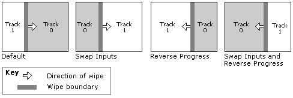

[This API is not supported and may be altered or unavailable in the future.]
A transition goes from input A to input B, and from time tâ‚€ to tâ‚. Therefore, the direction of a transition can mean one of two things:
The first is the input direction, and the second is the progress direction. You can control both directions.
The following diagram illustrates the difference between input direction and progress direction. It shows four variations on a standard SMPTE Wipe transition.

The transition resides on track 1. By default, the wipe goes from left to right and from track 0 to track 1. Swapping inputs causes the wipe to go from track 1 to track 0, but still from left to right. Reversing the progress makes the transition go from right to left. You can combine both, as shown on the far left.
For more information about how DES renders transitions, see The Timeline Model.
Working with Effects and Transitions
Â
Â